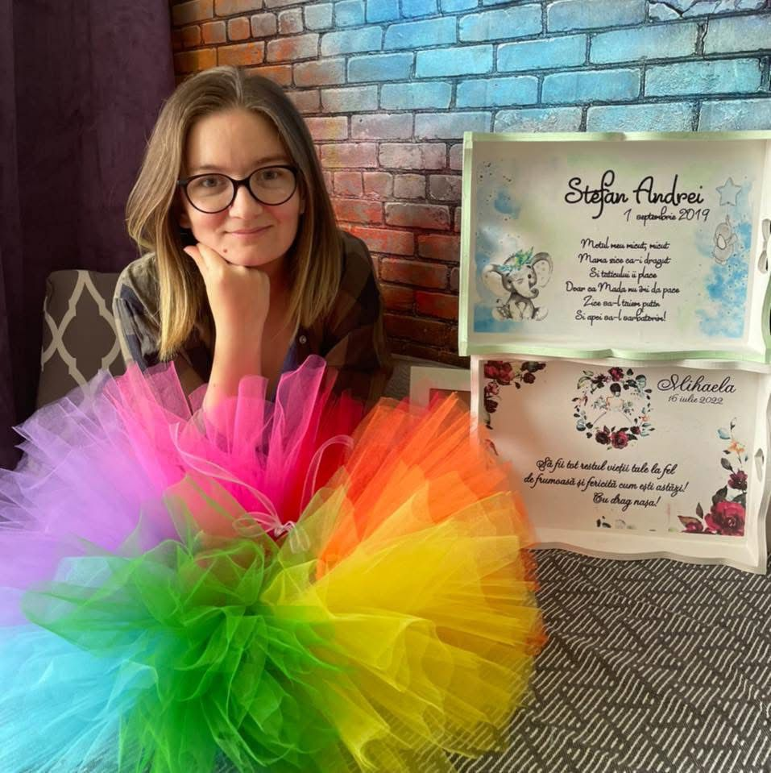
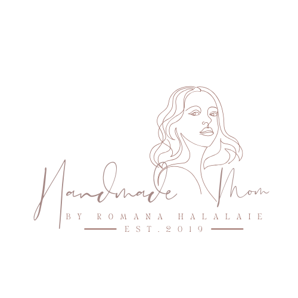

Eu sunt Romana, mămica a patru copii minunați ❤️, și împreună cu echipa mea creativă aducem la viață produse personalizate care să facă momentele speciale și mai memorabile.
💡 De ce am început handmade?
Totul a început acum 7 ani și jumătate, din dorința de a-i face
băiețelului nostru tricouri personalizate unice. Susținută de cel mai
mare ajutor și critic al meu – soțul meu – am transformat această
pasiune într-o mică afacere care aduce bucurie oamenilor de toate
vârstele.
🎁 Ce oferim?
✨ Misiunea noastră:
Nu căutăm perfecțiunea – căutăm să fim pe placul vostru și să aducem
zâmbete și emoții prin fiecare creație. Portofoliul nostru este
diversificat și continuăm să adăugăm produse noi, creative și
personalizate.

